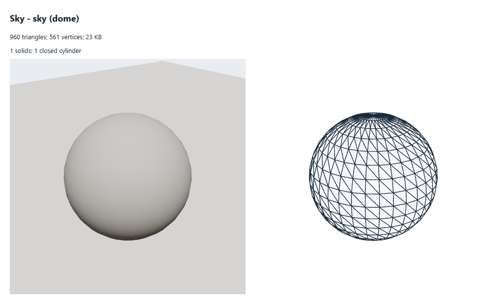

sky dome
What to change
- 1 round part(s) (cylinders, prisms): thin ones as boxes without caps or 3-sided prisms and the fake rounded-corner shader; caps that touch another part left out.
- 32 bytes a vertex: quantize (position 3 x int16, normal as 2 x int8 octahedral, colour 4 x uint8): about 12-16 bytes (KHR_mesh_quantization).
- Triangles
- 960
- Vertices
- 561
- Levels
- L0 960
- Memory
- 23 KB (geometry 23 KB, textures 0 KB)
- Per vertex
- 32 B: position:3xFloat32=12B normal:3xFloat32=12B uv:2xFloat32=8B
- Drawn as
- individual
- Material
- Shader
- Solids
- 1 solids: 1 closed cylinder
- Hidden triangles
- 0
- Shadow
- -
- Source
src/render/environment.ts:149(kit)- Notes
- drawn by the sky shader; its copy for the reflection probe the same; the clouds have no mesh (drawn in the post chain)